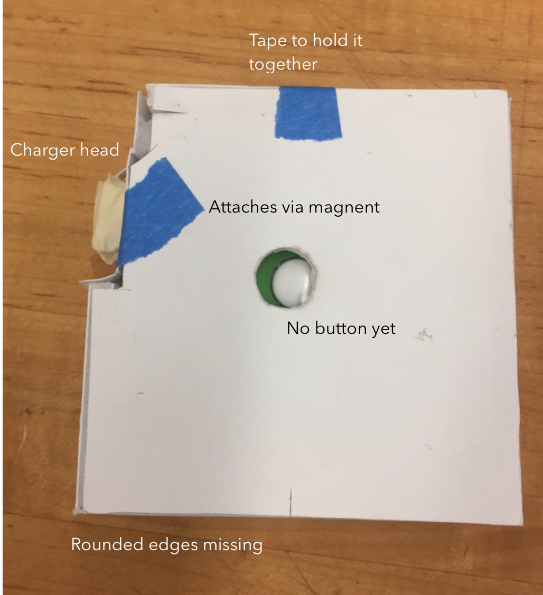
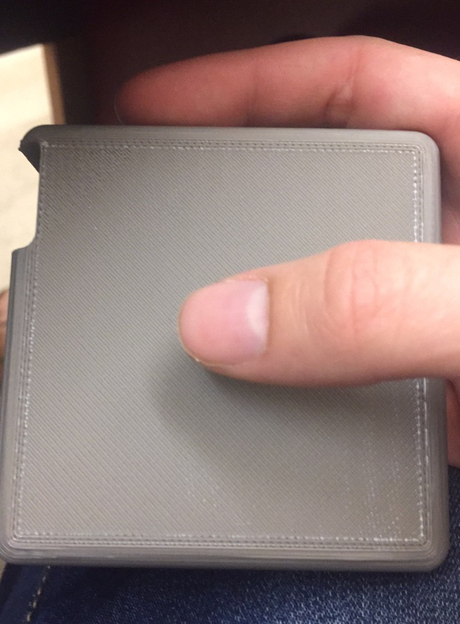

Automatically Retracting Charger
Reconnecting with Touch: A Physical Control Redesign
The Project
Explore opportunities to bring back respect for people’s perceptual-motor skills and the sensuous/sensory nature of their bodies when designing a new instance of a control that people interact with in the physical world. First, find a real-world control that needs to be improved. Next, re-imagine the control and design it as a physical point of interaction that communicates these three things:
1] Perceptual Affordance: How the control communicates the action a user can take.
2] Feedforward: How the control communicates what the likely outcome of an action might be.
3] Feedback: How the control communicates its response to the user input.
Simple 3D prototyping techniques as well as light and sound, will be used to explore many possibilities and to embody the final design.
Individual Assignment | 2.5 Weeks | Spring 2017
Controls Exploration
The first step in the design process was collecting a range of controls that could potentially benefit from redesign. The following is a curated selection of the controls that were considered.
Difficult to quickly pop the plug open with one hand. Once opened, the plug is sometimes in the way of the liquid flowing out of the container, resulting in a mess.

Awkward positioning of pull down lever that is not very natural. Function may not be obvious to people who don’t speak english.
Not intuitive to use, especially when in a panic. Use requires reading instructions, difficult for non-english speakers.

Frustrating to screw in and remove. Often found behind the computer and is difficult to reach. Not screwing it in tight enough means a shaky connection, too tight makes it nearly impossible to remove. Seem to break often.
Wrapping the cord too tight causes breakage. Wrapping it too loose makes it likely it’ll come unwrapped in a backpack. Nearly impossible to unwrap just a part of the cord without the whole thing coming apart.

Rarely does anyone use all of the buttons, making the interface completely cluttered and difficult to understand. There’s no easy and clear way to start the microwave
I also explored a range of controls that stood out to me as particularly “good” controls.

Easy to use with one hand. Clear feedforward and feedback.
One two states: on and off with light indication of state

Easy to open and close without looking

Simple zipper that keeps everything together.

Door knocker with handle that is obvious to pick up and release.
Red top stands out and is easy to lift and close. Click sound for fully closed.
Control Selection: Macbook Charger
Problem Statement
Ubiquitous device that is frequently used by many people. Slips are costly as they often result in breakage. Since it’s so frequently used, needs to be a mindless interaction with little cognitive load.
Note: Damage to the cord from wrapping occurs so frequently that Apple removed the wings from its most recent design, but now requires users to store the charger and cord separately.
Current Usage
1.) Manually introduce slack. Most users skip this step
2.) Wrap remainder loosely and clip charger head to wrapped cord
Competitive Analysis
Research on third party cord wrappers that tries to solve the problem
Manual rewinder. Does not support unwrapping only part of cord. No additional protection for cord.
Manual rewinder. Almost completely encases body and cord. Does support unwrapping part of the cord. Much bulkier than previous.

Automatic retractor. Small, but difficult to store because there are two differently shaped parts. Supports unwrapping only part of cord.
Observation
Before I began designing the product, I began by interviewing users and looking at complaints online. The following is a curated selection of responses:
“When I worked on a client’s MacBook, I always returned the adapter with the cable wrapped around the wings, and most of my customers commented on it, saying, “Oh, I didn’t know those were there” (or words to that effect).”
“I replace my charger every 2 years due to fraying”
“I'm on my third year of ownership of my MacBook Pro with Retina and also on my third charger. Expecting more out of Apple.”
“I took great care of the power adapter and cables since I got them, but somehow this cable still managed to fray away and now I'm stuck without my own power cable”
The Process
Exploration Sketches (See blue tab in Notebook A)
Prototype Iteration #1
Working with foam core and learning to cut straight lines
Completed first prototype: Only slightly larger than a quarter and required manual rewinding.
Feedforward: pulling causes brown disk to spin and cord to unwrap
Perceptual affordance: Pulling the cord and spinning the knob both have slight resistance. Once the end of the cord has been reached, firm resistance prevents more pulling.
Feedback: Cord appearing and disappearing
Prototype Iteration #2
I decided that having automatic retraction would be a huge improvement over the tedium of manual winding 5 feet of cord. I also wanted to make it approximately life size to allow users to provide more accurate feedback on the prototype.
Rough Sketch
Measurements
Body piece 1: Measuring tape simulates cord
Body piece 2: Other part of body completes the charger
The tape measurer “cord” clicks as the user pulls, providing perceptual affordance. The only part of the object that can be picked up is clearly the end of the charger head and the bit of cord that peeks out suggests it can be pulled. There is no protruding button in this version yet but the button on the tape measurer falls squarely on the thumb or forefinger of the user (depending on which hand is used).

Because the prototype was made out of paper, it was extremely light in comparison to the real thing and users were hesitant to pick it up and pull the cord because it seemed fragile. They didn’t have confidence in yanking on the cord because the perceptual affordance of a paper box implies that they shouldn’t do that.
Prototype Iteration #3
I knew to get the feel I wanted, a paper prototype wouldn’t cut it. Rounded edges and nice buttons were beyond my exacto knife skills, and however hard I tried, the paper box wouldn’t be able to overcome users’ hesitation to pull on the cord with any roughness. Solution: 3D printer
I used the same dimensions from the paper prototype but was able to adjust the radius of the edges to get a similar feel to the real product.
